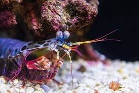

Fatos sobre o Stomatopoda: Pesadelo submarino.
Você Sabia?
Os membros do Stomatopoda se movem tão rápido que a água ao redor deles, ferve.
Eles são tão resistentes, que suas estruturas celulares vêm sendo estudada por pesquisadores para o desenvolvimento de armaduras corporais avançadas para tropas de combate.
Informações sobre o Stomatopoda:

Os estomatópodes(Odontodactylus scyllarus) são predadores ativos que caçam presas com o auxílio de um sentido de visão muito apurado e capaz de interpretar polarização no espectro ultravioleta e infravermelho). Apresentam uma grande variação de tamanho, que pode ir de poucos milímetros até aproximadamente 40 cm nas espécies maiores. Eles vivem em fundo consolidado, lodoso ou ainda arenoso, onde cavam seus buracos ou aproveitam-se dos orifícios deixados por outros animais para neles se instalar.